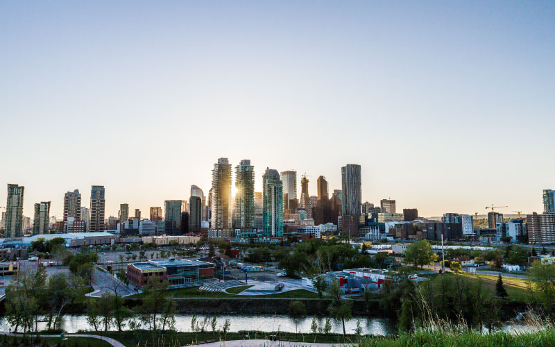
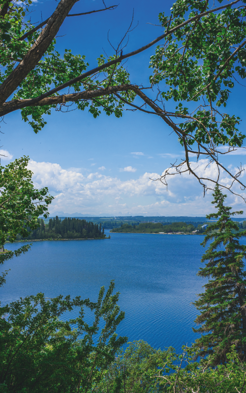

Cidades mais interessantes do Canadá
1-Calgary
Calgary é a maior cidade da província de Alberta e a terceira cidade mais populosa do Canadá. Ela tem um ar de cidade do interior misturando todo o conforto que uma cidade grande possui.
JÁ FOI ELEITA A MELHOR CIDADE PARA SE VIVER NA AMÉRICA DO NORTE
Em 2019, Calgary foi eleita, pelo décimo ano consecutivo, uma das cinco melhores cidades para se viver no mundo, de acordo com a Economist Intelligence Unit. A EIU é responsável pelo Global Liveability Index, um relatório anual que pesquisa 140 cidades globais e faz a avalição delas em cinco categorias: estabilidade, saúde, cultura e meio ambiente, educação e infraestrutura.
algary foi classificada com uma pontuação geral de 97,5 de 100, tendo as categorias de estabilidade, saúde, educação e infraestrutura classificadas com pontuação 100. Com isso, ela se tornou pelo segundo ano consecutivo a melhor cidade para se viver na América do Norte.
É A CIDADE MAIS ENSOLARADA DO CANADÁ
Calgary é considerada a cidade mais ensolarada do Canadá! E se você não gosta de temperaturas tão baixas, essa cidade é o seu destino ideal de intercâmbio, pois o inverno por lá não é tão rigoroso.
Isso acontece porque Calgary possui o clima seco e fica localizada próxima a montanhas, o que faz com que a sensação térmica não seja tão baixa. Já no verão, as temperaturas são bem altas e os dias são ensolarados.
O CUSTO DE VIDA É MAIS BAIXO QUE OUTRAS CIDADES GRANDES
Se formos comparar o custo de vida de Calgary com o das metrópoles Vancouver e Toronto, veremos que viver em Calgary é bem mais barato.
Por exemplo, juntando as despesas de acomodação, alimentação e transporte por semana, em Calgary você irá gastar em média 305 dólares canadenses.